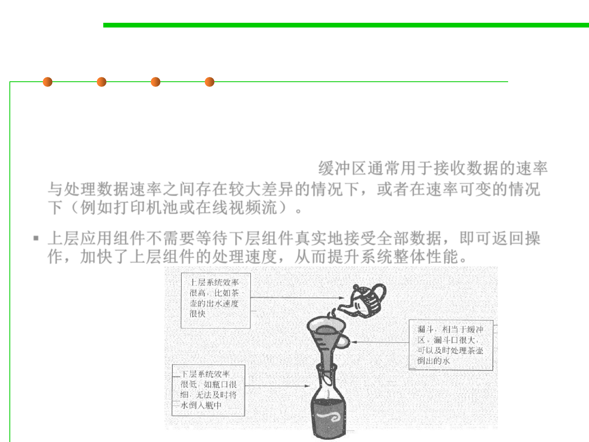

Buffer
8.1 Metrics, Principles, and Methods of Construction for Performance
▪ Buffers are typically used when there is a difference between the rate
at which data is received and the rate at which it can be processed, or
in the case that these rates are variable, for example in a printer
spooler or in online video streaming. 缓冲区通常用于接收数据的速率
与处理数据速率之间存在较大差异的情况下，或者在速率可变的情况
下（例如打印机池或在线视频流）。
▪ 上层应用组件不需要等待下层组件真实地接受全部数据，即可返回操
作，加快了上层组件的处理速度，从而提升系统整体性能。